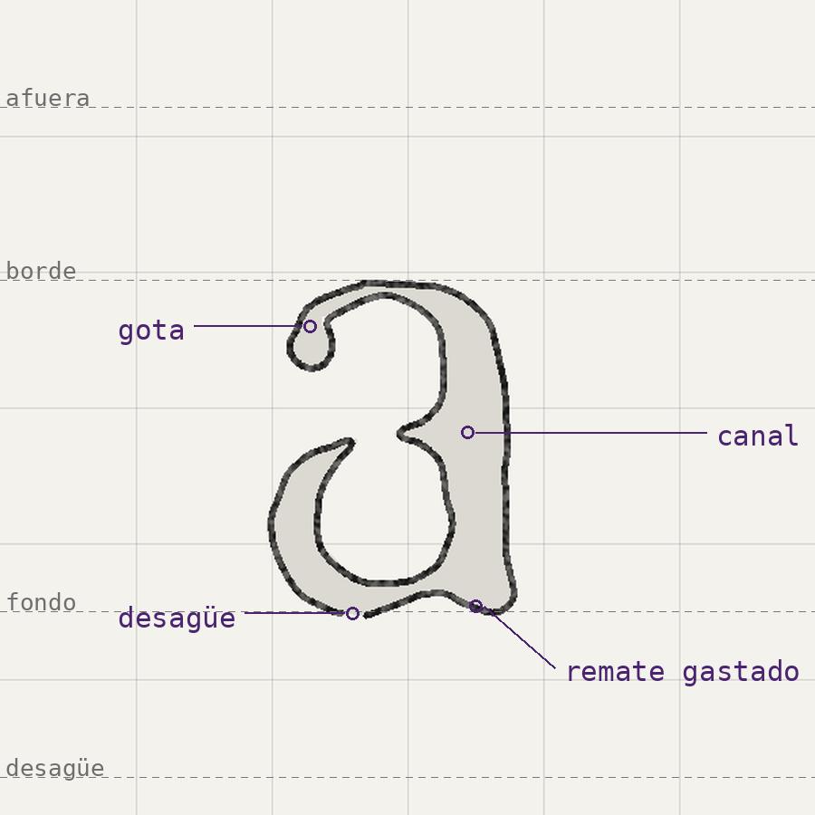
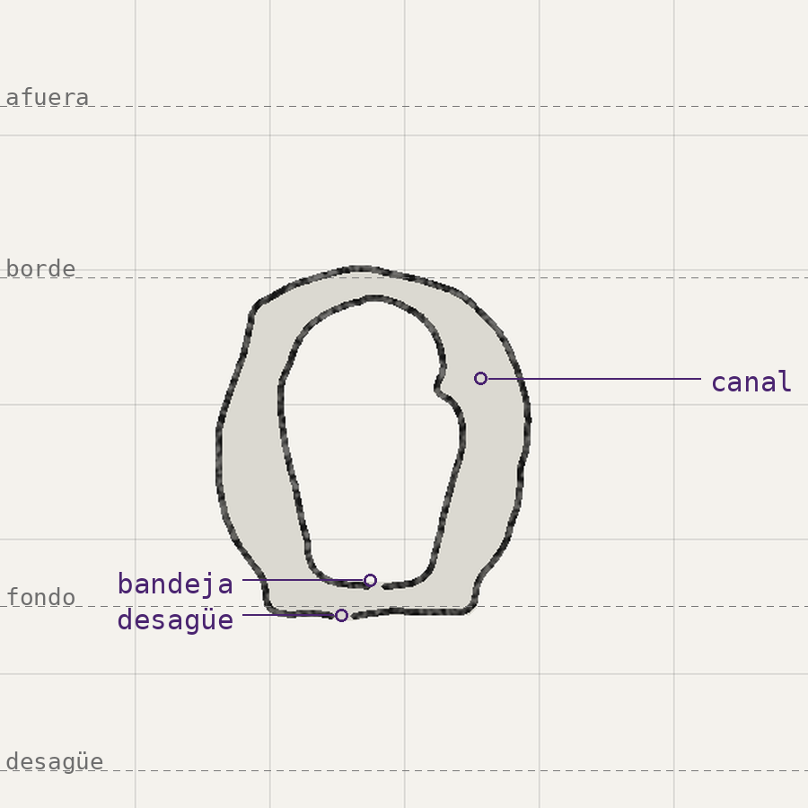
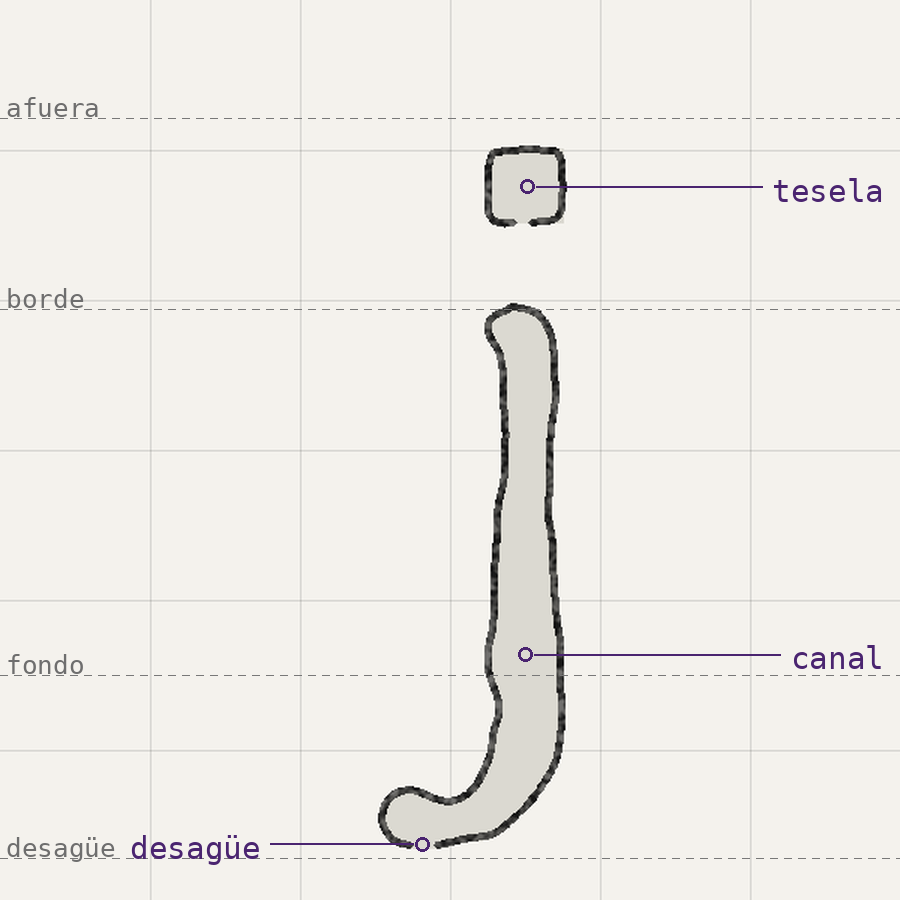
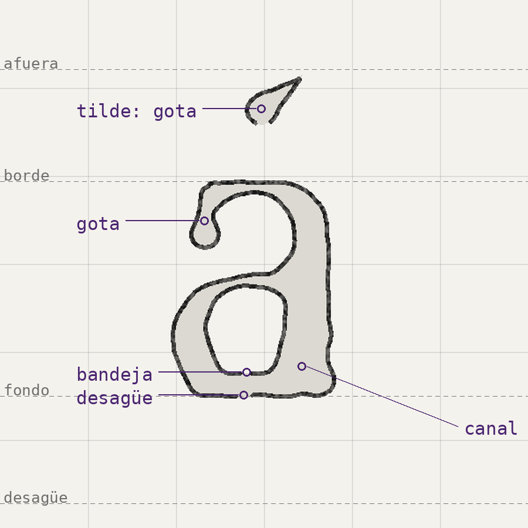
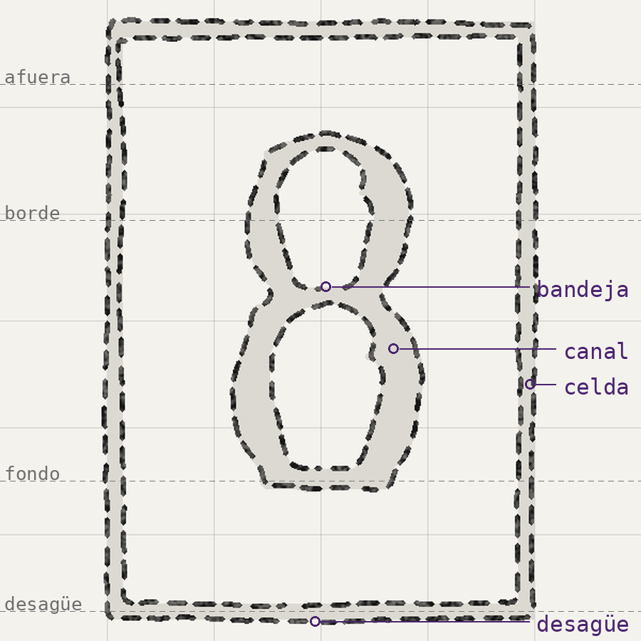
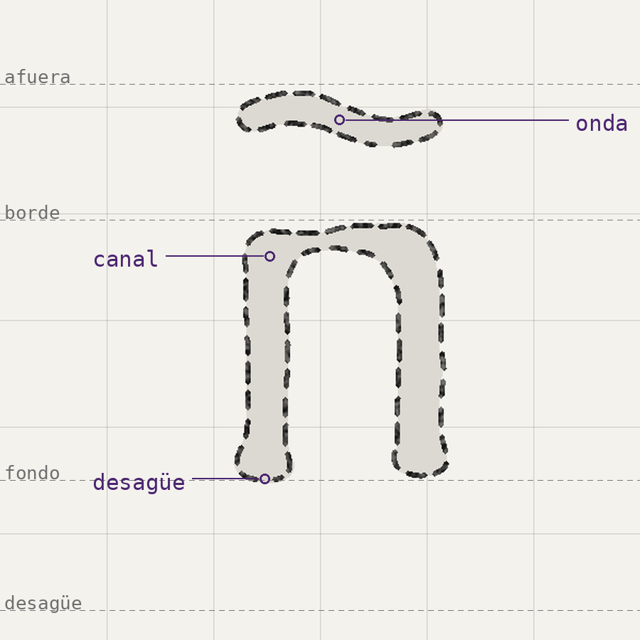

del pie, el esqueleto;
de la obra, el cuerpo
El pie dice dónde va cada trazo y cuánto mide. Eso no se toca. Cómo es cada parte de la letra lo decide la obra.






fig. 7.1 La a, la o, la j, la á, el 8 y la ñ, con sus partes nombradas.
La letra es hueca: se dibuja el contorno del canal. Cada contorno se abre abajo, en el desagüe. La mitad baja del ojo es una bandeja. Lo que termina mirando hacia abajo gotea. El punto es una tesela; la tilde, una gota; la virgulilla, una onda. Las cifras viven en una celda.
Simulación sobre un testigo sustituto.